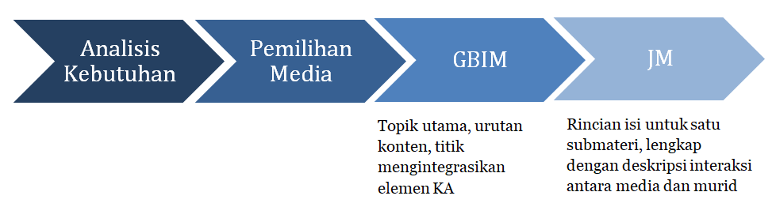

Kegiatan 1. Curah Pendapat (15 menit)
Selamat datang di Kegiatan Belajar 1. Perancangan Ide Media Pembelajaran IPA SMA Berbasis Kecerdasan Artifisial. Terima kasih atas dedikasi dan semangat belajar yang telah Bapak/Ibu tunjukkan hingga menyelesaikan Modul 3 dengan baik. Kini, kita akan memulai langkah awal dalam proses pengembangan media pembelajaran berbasis kecerdasan artifisial (KA).
Sebelum masuk ke kegiatan inti, kegiatan ini akan mengantar Bapak/Ibu untuk menelusuri tahap awal pengembangan media pembelajaran berbasis KA, yaitu bagaimana menghasilkan konsep yang teruji melalui analisis kebutuhan pembelajaran serta perencanaan Garis Besar Isi Media (GBIM) dan Jabaran Materi (JM). Tahapan ini menjadi fondasi penting sebelum proses produksi media dimulai.
Proses analisis kebutuhan merupakan langkah krusial dalam desain instruksional. Tanpa analisis yang mendalam, media yang dikembangkan bisa saja menarik secara visual, namun tidak relevan dengan kebutuhan belajar murid. Hasil analisis kebutuhan, serta rancangan GBIM dan JM, akan menjadi cetak biru yang menentukan arah pengembangan media Anda.
Sebagai pemantik, silakan merenungkan dan menjawab pertanyaan berikut:
| “Setelah melakukan analisis kebutuhan, data dan informasi apa yang Bapak/Ibu peroleh mengenai masalah dan kebutuhan konkret di kelas IPA?” |
Tuliskan jawaban pada Tautan Curah Pendapat KB1
Kegiatan 2. Tugas Kelompok dan Presentasi (100 Menit)
Pada kegiatan ini, Bapak/Ibu akan menerapkan pemahaman tentang analisis kebutuhan, pemilihan media, serta perancangan GBIM dan JM melalui aktivitas berbasis studi kasus dan tugas kelompok. Kegiatan ini bertujuan untuk memperdalam keterampilan analitis, kolaboratif, dan kreatif dalam merancang ide media pembelajaran IPA berbasis kecerdasan artifisial (KA).
1. Diskusi Kelompok
Bacalah kasus berikut ini dengan saksama!
| Pak Raka, ketua komunitas belajar IPA Provinsi DIY, berencana mengembangkan e-modul berbasis KA untuk meningkatkan kompetensi guru SMA dalam mengintegrasikan teknologi pembelajaran. Target peserta sebanyak 150 guru IPA dari berbagai kabupaten/kota di DIY dengan latar belakang dan kemampuan yang beragam. Tantangan yang dihadapi cukup banyak, antara lain tingkat literasi digital bervariasi, akses internet tidak merata, waktu pelatihan terbatas, dan kebutuhan diferensiasi konten. |
Berdasarkan kasus tersebut, Bapak/Ibu berdiskusi dalam kelompok kecil yang beranggotakan guru Fisika, Kimia, dan Biologi untuk mengidentifikasi kebutuhan belajar, kesenjangan kompetensi, dan profil audiens. Tuliskan hasil analisis dalam format tabel yang mencakup kondisi aktual, kondisi ideal, kesenjangan, dan rekomendasi kebutuhan media berbasis KA.
2. Proyek Kelompok
Berdasarkan hasil analisis kebutuhan, setiap kelompok memilih alternatif bentuk media pembelajaran berbasis KA yang paling sesuai dengan konteks studi kasus.
Langkah-langkah kegiatan:
- Tentukan minimal dua alternatif media (misalnya e-modul interaktif, aplikasi web, atau simulasi berbasis KA).
- Jelaskan alasan pemilihan media, dengan mempertimbangkan: karakteristik audiens, tujuan pembelajaran, dan fitur KA yang relevan (adaptivitas, personalisasi, efisiensi waktu).
- Rancang skenario pemanfaatan media dalam pembelajaran IPA SMA.
- Catat hasil diskusi dalam format tabel rencana pengembangan media.
3. Penyusunan Draft GBIM dan JM
Setelah menentukan media, kelompok menyusun draft Garis Besar Isi Media (GBIM) dan Jabaran Materi (JM) sebagai rancangan awal pengembangan media. Gunakan format yang telah disediakan pada lembar kerja modul ini.

Bapak/Ibu, ketiga aktivitas yang sudah dilakukan, tidak bekerja secara terpisah, melainkan merupakan sistem yang terintegrasi. Analisis kebutuhan memberikan landasan tentang apa masalah/kesenjangannya (gap) dan untuk siapa (audiens). Kriteria pemilihan media memberikan solusi teknologi dan format KA apa yang paling efektif untuk menjawab kebutuhan. GBIM dan JM memberikan struktur, bagaimana konten diorganisir dan akan direalisasikan.
Secara ringkas, output dari kegiatan inti di Kegiatan Belajar 1 mencakup:
- Tabel hasil analisis kebutuhan dan profil audiens.
- Rencana bentuk media pembelajaran berbasis KA.
- Draft awal GBIM dan JM.
Format dari ketiga output tersebut tersedia di Lampiran berikut
Setelah disusun, unggah seluruh dokumen karya Bapak Ibu pada Tautan Aktivitas Kegiatan 2 KB1
4. Presentasi dan Umpan Balik
Setiap kelompok mempresentasikan hasil kerja selama 5–7 menit. Kelompok lain memberikan tanggapan dan masukan sebagai umpan balik. Fasilitator membantu memfokuskan diskusi pada keterpaduan antara analisis kebutuhan, pemilihan media, dan rancangan isi media.
Kegiatan 3. Penyimpulan (65 menit)
Bapak/Ibu, sebagai penutup Kegiatan Belajar 1 ini, mari kita tarik simpulan dari proses yang telah dijalani bersama. Perjalanan pengembangan media pembelajaran berbasis kecerdasan artifisial selalu dimulai dari langkah fundamental, yaitu analisis kebutuhan serta perancangan isi media melalui GBIM dan JM. Tahapan ini bukan sekadar prosedur teknis, melainkan inti dari keseluruhan proses pengembangan yang menentukan arah, relevansi, dan kebermaknaan media pembelajaran.
Analisis kebutuhan membantu guru memahami siapa yang akan belajar, apa yang perlu dipelajari, dan dalam konteks seperti apa pembelajaran berlangsung. Tiga dimensi analisis, yaitu karakteristik murid, kompetensi dasar IPA SMA, dan konteks pembelajaran, menjadi kerangka berpikir yang memandu setiap keputusan dalam merancang solusi berbasis KA. Pemahaman yang menyeluruh terhadap ketiga dimensi ini menjadi fondasi kuat untuk menghadirkan media yang canggih secara teknologi, sekaligus peka terhadap kebutuhan nyata murid serta tantangan pembelajaran di lapangan.
Setiap keputusan pada tahap berikutnya, mulai dari pemilihan bentuk media hingga proses produksi, perlu selalu berpijak pada hasil analisis kebutuhan yang telah dilakukan. Ketepatan dalam mengenali masalah pembelajaran, kesenjangan kompetensi, dan peluang pemanfaatan teknologi KA akan sangat menentukan keberhasilan media yang dikembangkan.
Bapak/Ibu telah menapaki langkah pertama dalam perjalanan menghadirkan inovasi pembelajaran berbasis kecerdasan artifisial. Setiap langkah kecil dalam proses ini merupakan kontribusi nyata menuju pembelajaran IPA yang lebih relevan, adaptif, dan berdaya guna bagi murid. Semoga semangat untuk terus bereksperimen dan mengembangkan ide-ide kreatif tetap terjaga, sehingga media pembelajaran yang Bapak/Ibu kembangkan benar-benar membawa perubahan bermakna dalam ekosistem pendidikan IPA di Indonesia.